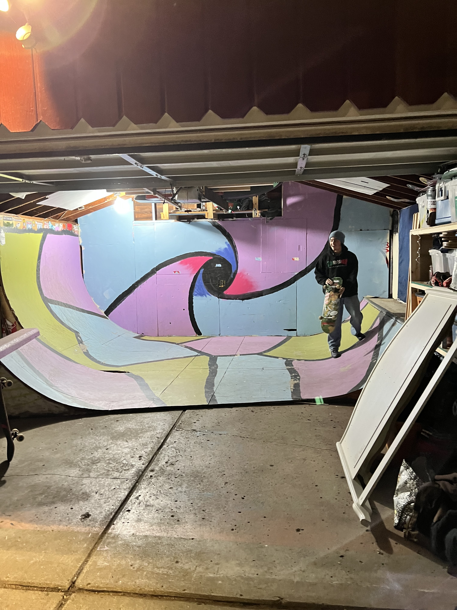

Posted on 9/26/2025, Written by Zachary Baur
On August 17, 2025 in Detroit, Michigan, world famous skatebaording podcast "The Bunt" took over Bishop DIY Skatepark to host a bbq, skate contest, and some basketball goodness. Backed by some of the best in the biz like Pluskateboarding, Satans Drano, and monster, The Bunt supplied the ctiy of detroit with good food, good vibes, and goood skating. It wasn't only the Bunt crew though, they brought along some friends of the show and well-known rippers in the skate community, JP Souza, Sean Malto, Jesse Alba, and Jake Anderson to come and shred up the park with the locals. The event started out chill with the pros and locals warming up and skating the park, preparing for the up-coming contest they would be participating in later that day. Once the contest got under way, the first obstacle that was skated was the bank to ledge, then it was the pyramid to curb in the middle of the park, finally it ended off with everyone skating the bump-to-can. After the contest was over and the hot dogs were flowing, it was on to the basketball court for a quick game of lightning. All the skaters who participated in the contest were able to play against the Bunt boys and the pros, which ended with Cephas from The Bunt securing the victory. Overall a great way to spend a Saturday with the boys, chilling, skating, and eating some good hotdogs.
| Pro Skater: | Board Sponsor: | Skate Stance: |
|---|---|---|
| Jesse Alba | Frog Skateboards | Regular |
| JP Souza | Tropicalients | Goofy |
| Sean Malto | Girl Skateboards/Crailtap | Regular |
| Mason Silva | Real Skateboards | Regular |
| Jake Anderson | FA Skateboards | Goofy |
Posted on 9/26/2025, Written by Zachary Baur
One day while working a shift at Pluskateboarding, it was near the end of the day when, by a miracle, all the homies showed up at once! It seemed crazy that everyone would show up, it was as if christmas came early! Thats when I saw Rob, the owner of the shop, walk in behind everyone and slowly start making his way behind the counter to talk to me. Thats when he dropped the bomb on me... "We are all going to my place to skate my miniramp, we'll help you close the shop if you want to shred! Music to my ears. In less than five minutes I had everything straghtened, money counted, lights off, and doors locked, finally ready to skate Rob's indoor mini. After a short 10 min drive to Rob's house, it was time for us to get skating. The group consisted of friends Joe, Eric, Matt, Cal, Tristan, and Rob. With a group of rippers like this, it was easy to see how much fun could be had here at the mini ramp. We each took turns getting our runs, adding our own fun trick to give each run a little of our own flare. We skated long into the night and enjoyed the sounds of laughter and skate trucks grinding coping.
Enjoying the content? Keep up to date with the Michigan skate scene and join the newsletter below!